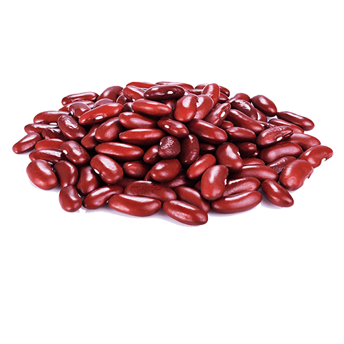
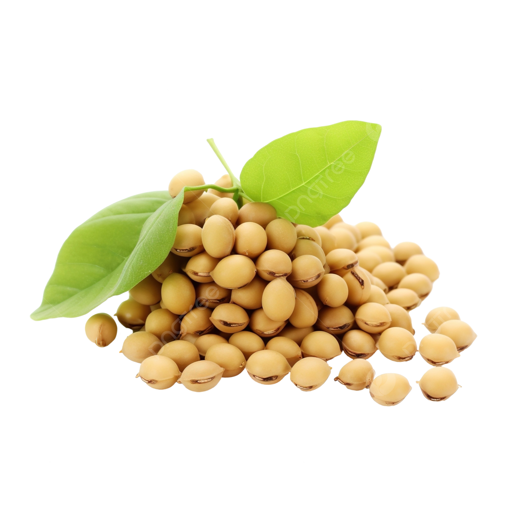

Alimentos não-perecíveis
Itens disponíveis

Arroz
Descrição: Arroz branco tipo 1, ideal para o dia a dia.
Preço: R$ 4,50

Feijão
Descrição: Feijão carioca selecionado, saboroso e nutritivo.
Preço: R$ 6,00

Soja
Descrição: Grãos de soja selecionados, ricos em proteínas.
Preço: R$ 5,00